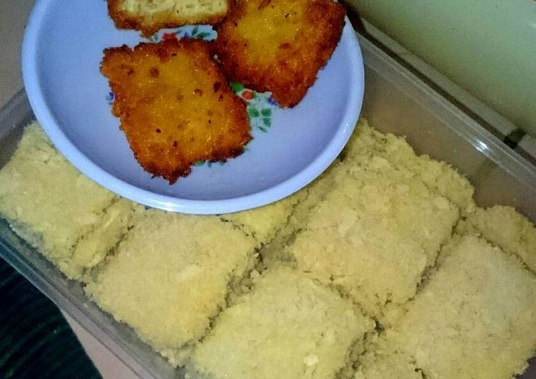
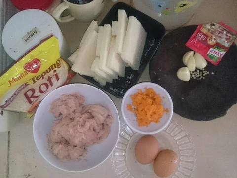
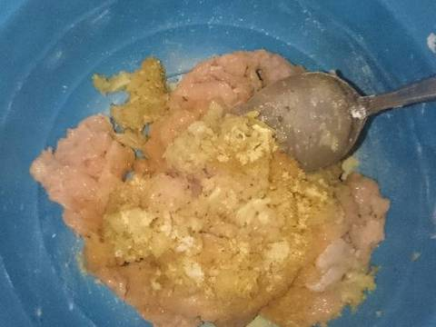
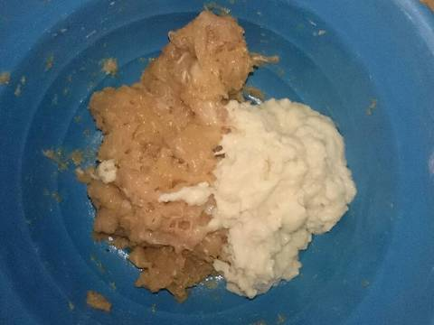
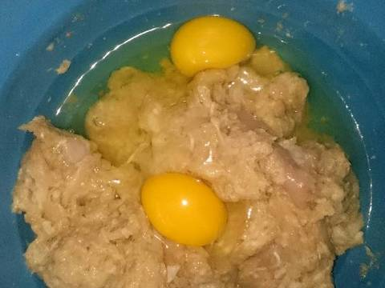
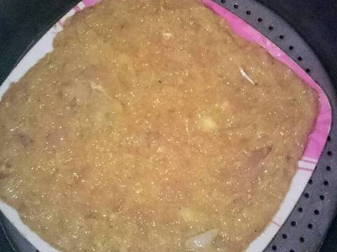
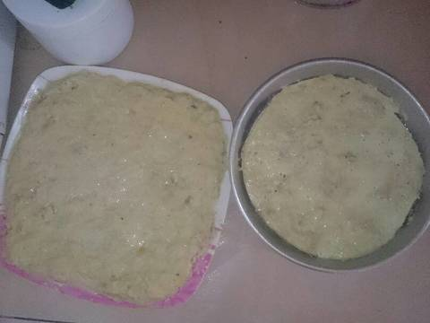
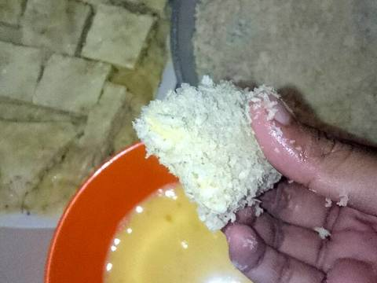
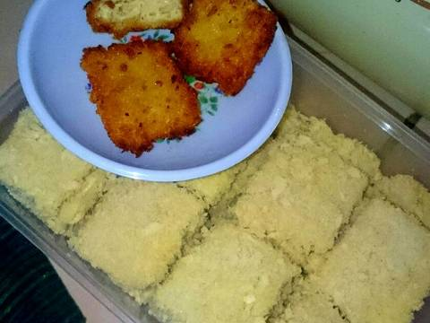

Resep Nugget Ayam Wortel
Bahan-bahan :

- 500 gram daging ayam giling
- 6 lembar roti tawar (hilangkan kulitnya)
- 2 telur ayam
- 1 sachet penyedap rasa
- Sejumput garam
- secukupnya Merica
- 4-5 siung bawang putih
- 1 wortel parutan ukuran sedang
- Bahan untuk lapisan :
- 1 telur ayam
- 70ml susu cair full cream
- 1 bungkus tepung roti
Langkah-langkah :
- Siapkan semua bahan-bahan di atas.

- Haluskan bawang putih dan merica. Lalu campurkan ke dalam daging ayam beserta dengan wortel, penyedap rasa, dan garam. Aduk rata.

- Rendam roti tawar dengan air. Setelah direndam, peras roti tawar hingga hancur. Lalu masukan roti tawar ke dalam adonan ayam. Aduk sampai rata.

- Masukkan telur ke dalam adonan ayam. Aduk sampai semua tercampur rata.

- Setelah semua tercampur rata, masukkan adonan ayam ke dalam wadah / loyang. Ratakan hingga rapi.

- Kukus ke dalam panci selama 30 menit.

- Setelah matang, angkat dan dinginkan. Lalu potong kecil-kecil dan masukkan ke dalam campuran telur dan susu cair. Setelah itu gulung-gulung nugget ke dalam tepung roti

- Setelah semua selesai dilapisi, goreng dengan api kecil agar nugget matang sempurna dan tidak cepat gosong.
